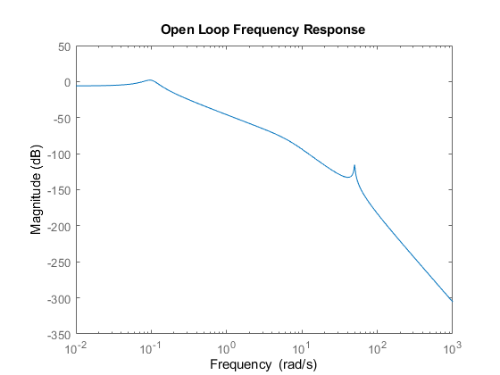
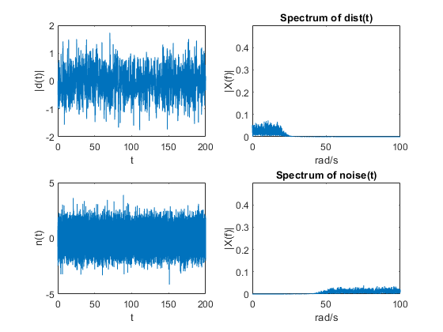
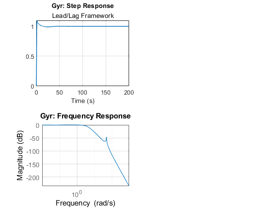
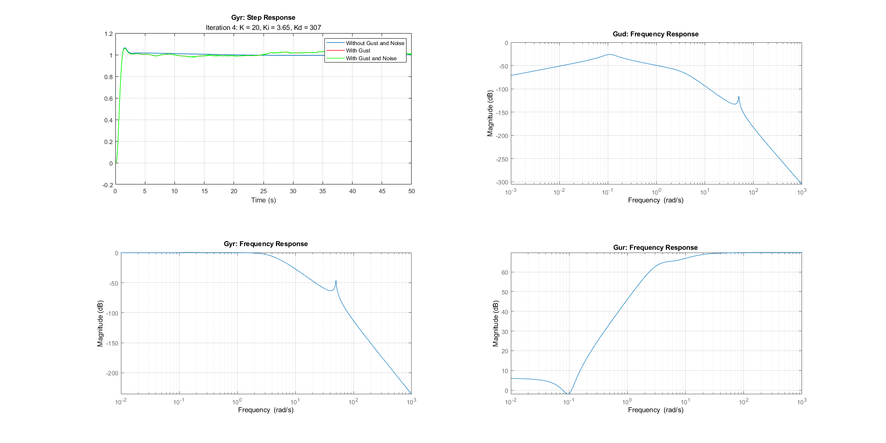
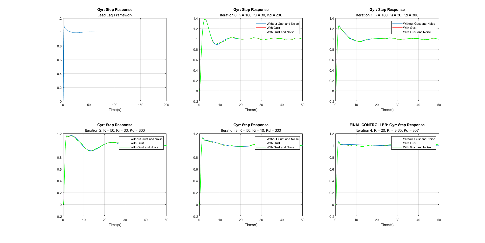

Contents
- Project Team Members
- Helicopter Model
- Create disturbance and noise signals.
- Lead/Lag Controller
- Time Simulation
- PID Controller Design: Iteration 0 (given)
- Time Simulation: Iteration 0 (given)
- Calculate rise time, settling time, and overshoot
- Controller Design: Iteration 1 (increased derivative action)
- Time Simulation: Iteration 1 (increased derivative action)
- Calculate rise time, settling time, and overshoot
- Controller Design: Iteration 2 (decreased proportional term)
- Time Simulation: Iteration 2 (decreased proportional term)
- Calculate rise time, settling time, and overshoot
- Controller Design: Iteration 3 (decreased integral term)
- Time Simulation: Iteration 3 (decreased integral term)
- Calculate rise time, settling time, and overshoot
- Controller Design: Iteration 4 FINAL CONTROLLER (decreased proportional and integral terms)
- Time Simulation: Iteration 4 (FINAL CONTROLLER)
- Calculate rise time, settling time, and overshoot
- Final Plots
Project Team Members
Zac Evermon, Jonathan Lephuoc, Runlin Liu, Sam Schiller, Corbin Tubbs
clear; clc;
close all
Helicopter Model
s = tf('s'); Om1 = 0.1; z1 = 0.2; % Phugoid Om2 = 6.5; z2 = 0.7; % Short period Om3 = 50; z3 = 0.01; % Flex mode G1 = tf(Om1^2,[1 2*z1*Om1 Om1^2]); G2 = tf(Om2^2,[1 2*z2*Om2 Om2^2]); G3 = tf(Om3^2,[1 2*z3*Om3 Om3^2]); G = 0.5*G1*G2*G3; figure("Name", "Open Loop Frequency Response") bodemag(G); title('Open Loop Frequency Response') % print -depsc plantBode.eps
Create disturbance and noise signals.
dt = 0.01; Fs = 1/dt; F = 1/(s/5+1); T = 0:dt:200; % Create disturbance D = 2*randn(length(T),1); wc = (20/2/pi)/(Fs/2); % Normalized cutoff frequency (10 rqd/s) [fb,fa] = butter(10,wc,'low'); % butter worth filter. d = filter(fb,fa,D); % Now filter the disturbance. This generates colored noise L = length(T)+1; NFFT = 2^nextpow2(L); % Next power of 2 from length of y Z = 2*fft(d,NFFT)/L; f = Fs/2*linspace(0,1,NFFT/2+1); % Only interested in signals upto Fs/2 Hz. absZ = abs(Z(1:NFFT/2+1)); figure(3); subplot(2,2,1);plot(T,d); xlabel('t'); ylabel('|d(t)|'); subplot(2,2,2);plot(2*pi*f,absZ); axis([0 100 0 .5]); title('Spectrum of dist(t)'); xlabel('rad/s'); ylabel('|X(f)|'); % Create sensor noise N = randn(length(T),1); wc = (50/2/pi)/(Fs/2); % Normalized cutoff frequency (10 Hz) [fb,fa] = butter(10,wc,'high'); % butter worth filter. n = filter(fb,fa,N); % Now filter the disturbance. This generates colored noise L = length(T)+1; NFFT = 2^nextpow2(L); % Next power of 2 from length of y Z = fft(n,NFFT)/L; f = Fs/2*linspace(0,1,NFFT/2+1); % Only interested in signals upto Fs/2 Hz. absZ = 2*abs(Z(1:NFFT/2+1)); figure(3); subplot(2,2,3);plot(T,n); xlabel('t'); ylabel('n(t)'); subplot(2,2,4);plot(2*pi*f,absZ); axis([0 100 0 .5]); title('Spectrum of noise(t)'); xlabel('rad/s'); ylabel('|X(f)|'); % Save Data P = G; distTime = d; noiseTime = n; save heli.mat P distTime noiseTime T
Lead/Lag Controller
K = 30; %With only proportional control the system oscillates. Needs dampening %Introduce Lead and Lag compensators z1 = 0.1; p1 = 11; z2 = 0.3; p2 = 0.25; Lead = ((s/z1)+1)/((s/p1)+1); %where p>>z>0 Lag = ((s+z2)/(s+p2)); %z>p>0 but z is close to p %Having lots of issues with steady state error with just %Lead/Lag Ki = 5; C = K*Lead*Lag + Ki/s; Gyr = C*G/(1+C*G);
Time Simulation
Y1_leadlag = step(Gyr,T); stepResults_leadlag = stepinfo(Y1_leadlag, T) % Lead/Lag framework satisfies the rise time requirement (0.683 sec), overshoot requirement (9.921%) % but does not satisfy the settling time requirement (8.969 sec > 5 sec). figure("Name", "Lead Lag Controller"); clf; subplot(2,2,1); plot(T,Y1_leadlag,'Linewidth',1); title('Gyr: Step Response'); subtitle('Lead/Lag Framework'); xlabel('Time (s)'); grid on; subplot(2,2,3); bodemag(Gyr); title('Gyr: Frequency Response'); grid on;
stepResults_leadlag =
struct with fields:
RiseTime: 0.6830
TransientTime: 8.9690
SettlingTime: 8.9690
SettlingMin: 0.9024
SettlingMax: 1.0992
Overshoot: 9.9208
Undershoot: 0
Peak: 1.0992
PeakTime: 1.6700
 PID Controller Design: Iteration 0 (given)
For the purposes of experimenting with the PID framework and to achieve the settling time requirement:
K = 100;
Ki = 30;
Kd = 200;
C = K + Ki/s + Kd*s/(s/10+1); % PID
Gyr = C*G/(1+C*G);
Gyd = G/(1+C*G);
Gyn = -Gyr;
Gur = C/(1+C*G);
Time Simulation: Iteration 0 (given)
Y1_0 = step(Gyr,T); Y2_0 = lsim(Gyd,10*d,T); Y3_0 = lsim(Gyn,10*n,T); u = step(Gur,T);
Calculate rise time, settling time, and overshoot
stepResults_0 = stepinfo(Y1_0,T); tSettle_0 = stepResults_0.SettlingTime; tRise_0 = stepResults_0.RiseTime; maxOvershoot_0 = stepResults_0.Overshoot;
Controller Design: Iteration 1 (increased derivative action)
Overshoot was high, increasing derivative action will increase damping and decrease overshoot
K = 100;
Ki = 30;
Kd = 300;
C = K + Ki/s + Kd*s/(s/10+1); % PID
Gyr = C*G/(1+C*G);
Gyd = G/(1+C*G);
Gyn = -Gyr;
Gur = C/(1+C*G);
Time Simulation: Iteration 1 (increased derivative action)
Y1_1 = step(Gyr,T); Y2_1 = lsim(Gyd,10*d,T); Y3_1 = lsim(Gyn,10*n,T); u = step(Gur,T);
Calculate rise time, settling time, and overshoot
stepResults_1 = stepinfo(Y1_1,T); tSettle_1 = stepResults_1.SettlingTime; tRise_1 = stepResults_1.RiseTime; maxOvershoot_1 = stepResults_1.Overshoot;
Controller Design: Iteration 2 (decreased proportional term)
Overshoot is still too high. Decreasing proportional term by factor of 0.5.
K = 50;
Ki = 30;
Kd = 300;
C = K + Ki/s + Kd*s/(s/10+1); % PID
Gyr = C*G/(1+C*G);
Gyd = G/(1+C*G);
Gyn = -Gyr;
Gur = C/(1+C*G);
Time Simulation: Iteration 2 (decreased proportional term)
Y1_2 = step(Gyr,T); Y2_2 = lsim(Gyd,10*d,T); Y3_2 = lsim(Gyn,10*n,T); u = step(Gur,T);
Calculate rise time, settling time, and overshoot
stepResults_2 = stepinfo(Y1_2,T); tSettle_2 = stepResults_2.SettlingTime; tRise_2 = stepResults_2.RiseTime; maxOvershoot_2 = stepResults_2.Overshoot;
Controller Design: Iteration 3 (decreased integral term)
Overshoot is still too high. Decreasing integral term from 30 to 10.
K = 50;
Ki = 10;
Kd = 300;
C = K + Ki/s + Kd*s/(s/10+1); % PID
Gyr = C*G/(1+C*G);
Gyd = G/(1+C*G);
Gyn = -Gyr;
Gur = C/(1+C*G);
Time Simulation: Iteration 3 (decreased integral term)
Y1_3 = step(Gyr,T); Y2_3 = lsim(Gyd,10*d,T); Y3_3 = lsim(Gyn,10*n,T); u = step(Gur,T);
Calculate rise time, settling time, and overshoot
stepResults_3 = stepinfo(Y1_3,T); tSettle_3 = stepResults_3.SettlingTime; tRise_3 = stepResults_3.RiseTime; maxOvershoot_3 = stepResults_3.Overshoot;
Controller Design: Iteration 4 FINAL CONTROLLER (decreased proportional and integral terms)
Overshoot is still too high. Decreasing proportional and integral terms and performing additional tailoring until design criteria are met.
K = 20;
Ki = 3.65;
Kd = 307;
C = K + Ki/s + Kd*s/(s/10+1); % PID
Gyr = C*G/(1+C*G);
Gyd = G/(1+C*G);
Gyn = -Gyr;
Gur = C/(1+C*G);
Time Simulation: Iteration 4 (FINAL CONTROLLER)
Y1_4 = step(Gyr,T); Y2_4 = lsim(Gyd,10*d,T); Y3_4 = lsim(Gyn,10*n,T); u = step(Gur,T);
Calculate rise time, settling time, and overshoot
stepResults_4 = stepinfo(Y1_4,T) tSettle_4 = stepResults_4.SettlingTime; tRise_4 = stepResults_4.RiseTime; maxOvershoot_4 = stepResults_4.Overshoot; f = figure("Name", "Final PID Controller"); clf; f.WindowState = "Maximized"; subplot(2,2,1); plot(T,Y1_4,'Linewidth',1); title('Gyr: Step Response'); subtitle('Iteration 4: K = 20, Ki = 3.65, Kd = 307'); xlabel('Time (s)'); grid on; hold on; plot(T,Y1_4+Y2_4,'r','Linewidth',1); plot(T,Y1_4+Y2_4+Y3_4,'g','Linewidth',1); xlim([0,50]); legend('Without Gust and Noise','With Gust', 'With Gust and Noise'); hold off; subplot(2,2,2); bodemag(Gyd); title('Gud: Frequency Response'); grid on; subplot(2,2,3); bodemag(Gyr); title('Gyr: Frequency Response'); grid on; subplot(2,2,4); bodemag(Gur); title('Gur: Frequency Response'); grid on; hold off; % By inspection of the Gyr Step Response graph using a PID framework, % maximum overshoot is 6.5084%, which is less than the 10% design criteria. % Rise time is 0.6915 seconds, which is less than the 1 second design criteria % and settling time is 2.36 seconds (within 2% of steady state value), % which is less than the 5 second design criteria. % There are no significant oscillations. However, while the settling time % is less than 5 seconds, the time it takes for the system to maintain the % steady state value without any low-frequency/low amplitude oscillations % is roughly ~40 seconds. During this time, the error never exceeds 1.5%, % so oscillations can be treated as negligible. This was most likely a % result of the system requiring very low K and Ki values in conjunction % with large Kd values in order to maintain a low overshoot at the cost of % higher steady state error.
stepResults_4 =
struct with fields:
RiseTime: 0.6915
TransientTime: 2.3599
SettlingTime: 2.3599
SettlingMin: 0.9010
SettlingMax: 1.0651
Overshoot: 6.5084
Undershoot: 0
Peak: 1.0651
PeakTime: 1.5700
 Final Plots
f = figure("Name", "Final Controller Plots"); clf; f.WindowState = 'maximized'; subplot(2,3,1); plot(T, Y1_leadlag,'Linewidth',1); title('Gyr: Step Response'); subtitle("Lead Lag Framework"); xlabel('Time(s)'); grid on; subplot(2,3,2); plot(T, Y1_0,'Linewidth',1); title('Gyr: Step Response'); subtitle("Iteration 0: K = 100, Ki = 30, Kd = 200"); xlabel('Time(s)'); grid on; hold on; plot(T,Y1_0+Y2_0,'r','Linewidth',1); plot(T,Y1_0+Y2_0+Y3_0,'g','Linewidth',1); xlim([0,50]); legend('Without Gust and Noise','With Gust', 'With Gust and Noise'); hold off; subplot(2,3,3); plot(T, Y1_1,'Linewidth',1); title('Gyr: Step Response'); subtitle("Iteration 1: K = 100, Ki = 30, Kd = 300"); xlabel('Time(s)'); grid on; hold on; plot(T,Y1_1+Y2_1,'r','Linewidth',1); plot(T,Y1_1+Y2_1+Y3_1,'g','Linewidth',1); xlim([0,50]); legend('Without Gust and Noise','With Gust', 'With Gust and Noise'); hold off; subplot(2,3,4); plot(T, Y1_2,'Linewidth',1); title('Gyr: Step Response'); subtitle("Iteration 2: K = 50, Ki = 30, Kd = 300"); xlabel('Time(s)'); grid on; hold on; plot(T,Y1_2+Y2_2,'r','Linewidth',1); plot(T,Y1_2+Y2_2+Y3_2,'g','Linewidth',1); xlim([0,50]); legend('Without Gust and Noise','With Gust', 'With Gust and Noise'); hold off; subplot(2,3,5); plot(T, Y1_3,'Linewidth',1); title('Gyr: Step Response'); subtitle("Iteration 3: K = 50, Ki = 10, Kd = 300"); xlabel('Time(s)'); grid on; hold on; plot(T,Y1_3+Y2_3,'r','Linewidth',1); plot(T,Y1_3+Y2_3+Y3_3,'g','Linewidth',1); xlim([0,50]); legend('Without Gust and Noise','With Gust', 'With Gust and Noise'); hold off; subplot(2,3,6); plot(T, Y1_4,'Linewidth',1); title('FINAL CONTROLLER: Gyr: Step Response'); subtitle("Iteration 4: K = 20, Ki = 3.65, Kd = 307"); xlabel('Time(s)'); grid on; hold on; plot(T,Y1_4+Y2_4,'r','Linewidth',1); plot(T,Y1_4+Y2_4+Y3_4,'g','Linewidth',1); xlim([0,50]); legend('Without Gust and Noise','With Gust', 'With Gust and Noise');